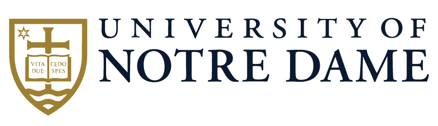
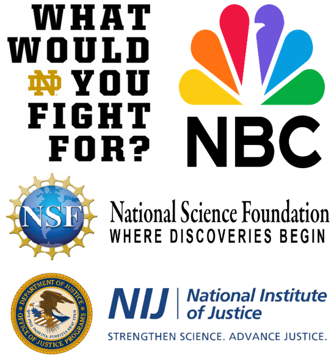

|
Yanfang (Fanny) Ye, Ph.D.Galassi Family Collegiate Professor in Computer Science and Engineering Department of Computer Science and Engineering Associate Director of Applied Analytics Lucy Family Institute for Data & Society University of Notre Dame Email: yye7 (at) nd (dot) edu |
Research Interests
"Innovation, research and education - for a better world!"
I am currently the Galassi Family Collegiate Professor in Computer Science and Engineering (Full Professor) in the Department of Computer Science and Engineering (CSE) and the
Associate Director of Applied Analytics in the Lucy Family Institute for Data & Society at the University of Notre Dame. Before joining Notre Dame, I was the Theodore L. and Dana J. Schroeder Associate Professor in the Department of Computer and Data Sciences at Case Western Reserve University. My research areas mainly include Artificial Intelligence (AI), Machine Learning (ML), Data Mining, Cybersecurity, and Public Health. By harnessing large-scale, multi-source, multi-modality data, I and my group discover new research problems, tackle fundamental challenges in AI and machine learning, and deploy our developed techniques into real-world applications with broader impacts. More specifically, we strive to (1) advance knowledge and science in graph learning, trustworthy LLMs, and multimodal learning, (2) bridge AI/ML and cybersecurity concentrating on AI security and safety, large-scale malware detection, and the study of the evolving underground ecosystem, and (3) develop AI and data-driven techniques to combat the opioid crisis and infectious disease outbreaks. With long-term collaboration with industry partners and by working with my team, I have advanced AI-driven innovations for cybersecurity. For example, my proposed and developed techniques have significantly reduced the time needed to detect new malicious software - from weeks to seconds, which have been incorporated into popular commercial cybersecurity products including Comodo and Kingsoft Antivirus that protect millions of users worldwide. By collaborating with various partners including healthcare professionals and law enforcement, I have conducted extensive research on combating the opioid crisis and infectious disease outbreaks, which has generated significant societal impacts. I have had over 170 publications in my fields (e.g., ACM CSUR, IEEE TNNLS, IEEE TKDE, SIGKDD, ICDM, CIKM, WWW, NeurIPS, ACL, NAACL, ICLR, ICML, AAAI, IJCAI, USENIX Security, NDSS, ACSAC). By working with my team, I have received nine best paper awards, including the AAAI-DCAA 2023 Best Paper Runner-Up Award, the ACM CIKM 2021 Best Paper Award (Full Paper Track), the ACM CIKM 2021 Best Paper Runner-Up Award (Applied Paper Track), the AICS 2019 Challenge Problem Winner, the SIGKDD 2017 Best Paper Award and SIGKDD 2017 Best Student Paper Award (Applied Data Science Track), and the IEEE EISIC 2017 Best Paper Award. I have also received the Innovation Award (2020-2021) and the Research Award (2019-2020) at CWRU, the MetroLab Innovation of the Month (2020), the NSF Career Award (2019), the IJCAI Early Career Spotlight (2019), the ICDM 2018 Outstanding Service Award, and the New Researcher of the Year Award (2016-2017) at WVU. As the Lead/Sole PI, I have received multiple awards from the NSF, DoJ/NIJ, Notre Dame Strategic Framework Research Grant, and Notre Dame Poverty Research Package in support of our research. All these awards are highly competitive.
 indicates the corresponding author.
indicates the corresponding author.
For ongoing research topics, please refer to Research page.
- Graph Machine Learning
- Trustworthy LLMs and Multimodal Learning
- Developing Innovative Links between AI/ML and Cybersecurity
- AI and Data-driven Techniques for Public Health
 Position Openings: To Prospective Students and Postdocs
Position Openings: To Prospective Students and Postdocs
-
I am currently looking for multiple Ph.D. students and Postdocs doing supervised research or independent study with me in the CSE department at the University of Notre Dame. If you are a well motivated and dedicated student pursuing a Ph.D.
degree or postdoc related to the areas of AI/ML, Data Mining, Cybersecurity, and Public Health, please send me an email with your CV. I aim to recruit 1 postdoc and 5 Ph.D. students for Spring/Fall 2026 (until filled).
The postdocs will be provided with competitive packages and the Ph.D. students will be provided with multi-year research assistantships which cover the full cost of tuition and offer the full year stipend ($41K+ for 12 month/year) and benefits. I will work with each postdoc or student to identify the most suitable topic based on his/her academic interests and background. I will also help each postdoc or student to build his/her strong capability and publication record as well as the career development with a good timing. I very much enjoy working with each member in my group and take each postdoc or student as a friend and a collaborator. Doing research is to build an enjoyable career and have fun.
My expectations on perspective Ph.D. students are: (1) self-motivated, honest, diligent, intelligent, and easy-going personality; (2) strong research potential, programming capability, mathematical background; and (3) dedicated to research and willing to publish in prestigious forums. The minimum requirements for Ph.D. students are: B.S. in Computer Science (applicants with a master degree will be preferred), or related fields, and other general admission requirements.
News
-
Fighting to Combat the Opioid Crisis with Artificial Intelligence (AI)
Our work on the combat against the opioid crisis by advancing AI technologies received the award-winning "What Would You Fight For (WWYFF)?" series. By engaging with by the Drug Enforcement Administration (DEA), our work was aired on NBC and the stadium during the Notre Dame football game with millions of audiences on October 28, 2023 in the "Red Robbin Week"; due to the significant societal impact, it was re-aired on NBC-Peacock and the stadium during the Notre Dame football game on September 28, 2024. The story can be accessed here and the filmed video aired on NBC during the football game can be found here. Thank my team and collabrators! We also deeply appreciate the National Science Foundation (NSF) and Department of Justice (DoJ)/National Institute of Justice(NIJ) for the strong support on our works in this research direction. THANK YOU!  The University of Notre Dame's award-winning "What Would You Fight For (WWYFF)?" series showcases the work, scholarly achievements, and global impact of Notre Dame faculty, students, and alumni. These two-minute segments, each originally aired during a home football game broadcast on NBC, highlight the University's proud moniker, the Fighting Irish, and tell the stories of the members of the Notre Dame family who fight to bring solutions to a world in need. 
- My student Dr. Qianlong Wen will join Tiktok as Machine Learning Scientist in Spring 2025. Congratulations to Qianlong! I am very proud of and truly happy for your accomplishments in the CSE-PhD program at ND.
- I was promoted to Full Professor with new title of Endowed Chair Professorship at the University of Notre Dame in Spring 2024. I would like to thank the strong support and kind help from my mentors, colleagues, peers, collaborators, students, my research group, and my familiy and friends. I also deeply appreciate the funding agencies for the generous support on our research works. BIG THANK YOU! I am most grateful for all of these.
- My student Dr. Yiyue Qian has joined Amazon as Applied Scientist in Spring 2024. My another student Mingxuan Ju has joined Snapchat as Research Scientist and is upon graduation in Fall 2024. Congratulations to Yiyue and Mingxuan! I am very proud of you for your accomplishments in the CSE-PhD program at ND. I am also truly happy for both of you getting compelling full-time job offers in such a competitive environment!
- Our paper entitiled "Unifying Data-Model Sparsity for Class-Imbalanced Graph Representation Learning" won the AAAI-DCAA 2023 Best Paper Runner-Up Award. Thank my collabrators! Congratulations to our team!
- Our paper entitiled "Disentangled Heterogeneous Dynamic Graph Learning for Opioid Overdose Prediction" won the ACM SIGKDD 2022 Best Paper Award Shortlist (Research Track). Congratulations to our team!
- Our paper entitiled "RxNet: Rx-refill Networks for Overprescribing Prediction" recently received the ACM CIKM 2021 Best Paper Award (Full Paper Track). Congratulations to our team!
- Our paper entitiled "Detection of Illicit Drug Trafficking Events on Instagram: A Deep Multimodal Multi-label Learning Approach" recently received the ACM CIKM 2021 Best Paper Runner-Up Award (Applied Paper Track). Thank my collabrators! Congratulations to our team!
- Our paper entitiled "Dr.Emotion: Disentangled Representation Learning for Emotion Analysis on Social Media to Improve Community Resilience in the COVID-19 Era and Beyond" won the WWW 2021 Best Paper Award Shortlist. Congratulations to our team!
- Our developed AI-driven System for Real-time COVID-19 Risk Assessment in the US received the MetroLab Innovation of the Month Award (May 2020). In early pandemic, we have proposed and developed an AI-driven system (i.e., named alpha-Satellite) to provide hierarchical community-level risk assessment to assist with the development of strategies for community mitigation. More specifically, given a specific location (either user input or automatic positioning), the developed system will automatically provide risk indices associated with it in a hierarchical manner (e.g., state, county, specific location) to enable individuals to select appropriate actions for protection while minimizing disruptions to daily life to the extent possible. After we launched our system for public tests, it has had 654,522 users as of June 19, 2023 and attracted positive media attentions (e.g., WKYC, Ideastream, NPR, Fox8, WTAM, GovTech).
- Our paper entitiled "Enhancing Robustness of Deep Neural Networks Against Adversarial Malware Samples: Principles, Framework, and Application to AICS'2019 Challenge" received the AAAI 2019 Workshop on Artificial Intelligence for Cyber Security Challenge Problem Winner. Thank my collabrators! Congratulations to our team!
- Our paper entitiled "Adversarial Machine Learning in Malware Detection: Arms Race between Evasion Attack and Defense" received the IEEE EISIC 2017 Best Paper Award. Congratulations to our team! Congratulations to my student Lingwei Chen!
- Our paper entitled "HinDroid: An Intelligent Android Malware Detection System Based on Structured Heterogeneous Information Network" received the SIGKDD 2017 Best Paper Award and the SIGKDD 2017 Best Student Paper Award (Applied Data Science Track). Congratulations to our team for the SIGKDD 2017 Best Paper Award! Congratulations to my student Shifu Hou for the SIGKDD 2017 Best Student Paper Award! Our video won SIGKDD 2017 Audience Appreication Award Finalist (27,766 views on YouTube).
Selected Publications (Full Publications)
* indicates that the author is my student/postdoc;Journal Publications
- Chuanbo Hu, Bin Liu, Xin Li, Yanfang Ye, Minglei Yin. "Knowledge-prompted ChatGPT: Enhancing drug trafficking detection on social media", Information & Management, 2024.
- Chuanbo Hu, Bin Liu, Yanfang Ye, Xin Li. "Fine-grained Classification of Drug Trafficking Based on Instagram Hashtags", Decision Support Systems, 2023.
- Bo Yan, Cheng Yang, Chuan Shi, Yong Fang, Qi Li, Yanfang Ye, Junping Du. "Graph Mining for Cybersecurity: A Survey", ACM Transactions on Knowledge Discovery from Data (TKDD), 2023.
- Xiao Wang, Deyu Bo, Chuan Shi, Shaohua Fan, Yanfang Ye, Phillip Yu. "A Survey on Heterogeneous Graph Embedding: Methods, Techniques, Applications and Sources", IEEE Transactions on Big Data (IEEE TBD), 2022.
- Deqiang Li, Qianmu Li, Yanfang Ye, Shouhuai Xu. "Arms Race in Adversarial Malware Detection: A Survey", ACM Computing Surveys (ACM CSUR), 2021.
- Chuanbo Hu, Minglei Zhang, Bin Liu, Xin Li, Yanfang Ye. "Identifying Illicit Drug Dealers on Instagram with Large-scale and Multimodal Data Fusion", ACM Transactions on Intelligent Systems and Technology (ACM TIST), 2021.
- Deqiang Li, Qianmu Li, Yanfang Ye, Shouhuai Xu. "A Framework for Enhancing Deep Neural Networks against Adversarial Malware", IEEE Transactions on Network Science and Engineering (IEEE TNSE), 2021.
- Yanfang Ye (), Yujie Fan*, Shifu Hou*, Yiming Zhang*, Yiyue Qian*, Shiyu Sun*, Qian Peng*, Mingxuan Ju*, Wei Song, Kenneth Loparo. "a-Satellite: An AI-driven System and Benchmark Datasets for Dynamic COVID-19 Risk Assessment in the United States", IEEE Journal of Biomedical and Health Informatics (IEEE J-BHI), 2020. MetroLab Innovation of the Month.
- Liang Zhao, Feng Chen, Yanfang Ye. "Efficient Learning with Exponentially-Many Conjunctive Precursors for Interpretable Spatial Event Forecasting", IEEE Transactions on Knowledge and Data Engineering (IEEE TKDE), 2019.
- Junxiang Wang, Liang Zhao, Yanfang Ye, Yuji Zhang. "Adverse Event Detection by Integrating Twitter Data and VAERS", Journal of Biomedical Semantics (JBS), 9(19), 2018.
- Yanfang Ye, Tao Li, Donald Adjeroh, S. Sitharama Iyengar. "A Survey on Malware Detection Using Data Mining Techniques", ACM Computing Surveys (ACM CSUR), Vol. 50, Issue 3, Article No. 41, 2017.
- Yanfang Ye (), Lingwei Chen*, Shifu Hou*, William Hardy*, Xin Li. "DeepAM: A Heterogeneous Deep Learning Framework for Intelligent Malware Detection", Knowledge and Information Systems (KAIS), Vol. PP (52): 1~21, 2017.
- Gongde Guo, Lifei Chen, Yanfang Ye, Qingshan Jiang. "Cluster Validation Method for Determining the Number of Clusters in Categorical Sequences", IEEE Transactions on Neural Networks and Learning Systems (IEEE TNNLS), Vol. PP (99): 1-13, 2016.
Conference Publications
- Zehong Wang*, Zheyuan Zhang*, Tianyi Ma*, Nitesh Chawla, Chuxu Zhang, Yanfang Ye (). "Neural Graph Pattern Machine", The International Conference on Machine Learning (ICML), 2025. (26.9% acceptance rate)
- Zehong Wang*, Zheyuan Zhang*, Tianyi Ma*, Nitesh Chawla, Chuxu Zhang, Yanfang Ye (). "Towards Learning Generalities Across Graphs via Task-trees", The International Conference on Machine Learning (ICML), 2025. (26.9% acceptance rate)
- Zheyuan Zhang*, Yiyang Li*, Nhi Ha Lan Le, Zehong Wang*, Tianyi Ma*, Vincent Galassi*, Keerthiram Murugesan, Nuno Moniz, Werner Geyer, Nitesh V Chawla, Chuxu Zhang, Yanfang Ye (). "NGQA: A Nutritional Graph Question Answering Benchmark for Personalized Health-aware Nutritional Reasoning", The 63rd Annual Meeting of the Association for Computational Linguistics (ACL Main), 2025. (20.3% acceptance rate)
- Tianyi Ma*, Yiyue Qian*, Zehong Wang*, Zheyuan Zhang*, Chuxu Zhang, Yanfang Ye (). "LLM-Empowered Class Imbalanced Graph Prompt Learning for Online Drug Trafficking Detection", The 63rd Annual Meeting of the Association for Computational Linguistics (ACL Findings), 2025. (26.9% acceptance rate)
- Shang Ma*, Tianyi Ma*, Jiahao Liu, Wei Song, Zhenkai Liang, Xusheng Xiao, Yanfang Ye (). "PsyScam: A Benchmark for Psychological Techniques in Real-World Scams", The 2025 Conference on Empirical Methods in Natural Language Processing (EMNLP), 2025. (17.35% acceptance rate as Findings)
- Shang Ma*, Chaoran Chen*, Shao Yang, Shifu Hou, Toby Jia-jun Li, Xusheng Xiao, Tao Xie, Yanfang Ye (). "Careful About What App Promotion Ads Recommend! Predict and Explain Malware Promotion through App Promotion Graph", The Network and Distributed System Security Symposium (NDSS), 2025. (16.1% acceptance rate)
- Zheyuan Zhang*, Zehong Wang*, Tianyi Ma*, Varun Sameer Taneja*, Sofia Nelson*, Nhi Ha Lan Le, Keerthiram Murugesan, Mingxuan Ju*, Nitesh V Chawla, Chuxu Zhang, Yanfang Ye (). "MOPI-HFRS: A Multi-objective Personalized Health-aware Food Recommendation System with LLM-enhanced Interpretation", The 31st SIGKDD Conference on Knowledge Discovery and Data Mining (SIGKDD), 2025. (22% acceptance rate in ADS Track)
- Chaoran Chen*, Zhiping Zhang, Bingcan Guo, Shang Ma*, Ibrahim Khalilov, Simret A Gebreegziabher, Yanfang Ye, Ziang Xiao, Yaxing Yao, Tianshi Li, Toby Jia-Jun Li. "The Obvious Invisible Threat: LLM-Powered GUI Agents' Vulnerability to Fine-Print Injections", The Twenty-First Symposium on Usable Privacy and Security (SOUPS), 2025. (19.1% acceptance rate)
- Chaoran Chen*, Yanfang Ye, Tianshi Li, Yaxing Yao, Toby Li. "Democratizing End User Auditing for Online Content Recommendations", The ACM Symposium on User Interface Software and Technology (UIST), 2025. (22% acceptance rate)
- Zehong Wang*, Sidney Liu*, Zheyuan Zhang*, Tianyi Ma*, Chuxu Zhang, Yanfang Ye (). "Can LLMs Convert Graphs to Text-Attributed Graphs?", The Annual Conference of the Nations of the Americas Chapter of the Association for Computational Linguistics (NAACL Main), 2025. (22% acceptance rate)
- Zehong Wang*, Zheyuan Zhang*, Nitesh V Chawla, Chuxu Zhang, Yanfang Ye (). "Training MLPs on Graphs without Supervision", ACM International Conference on Web Search and Data Mining (WSDM), 2025. (17.3% acceptance rate)
- Zehong Wang*, Zheyuan Zhang*, Nitesh V Chawla, Chuxu Zhang, Yanfang Ye (). "GFT: Graph Foundation Model with Transferable Tree Vocabulary", The Conference on Neural Information Processing Systems (NeurIPS), 2024. (25.8% acceptance rate)
- Yiyue Qian*, Tianyi Ma*, Chuxu Zhang, Yanfang Ye (). "Dual-level Hypergraph Contrastive Learning with Adaptive Temperature", The ACM Web Conference (WWW), 2024. (20.2% acceptance rate)
- Zheyuan Zhang*, Zehong Wang*, Shifu Hou*, Evan Hall*, Landon Bachman*, Jasmine White*, Vincent Galassi*, Nitesh V Chawla, Chuxu Zhang, Yanfang Ye (). "Diet-ODIN: A Novel Framework for Opioid Misuse Detection with Interpretable Dietary Patterns", The 30th SIGKDD Conference on Knowledge Discovery and Data Mining (SIGKDD), 2024. (20% acceptance rate in ADS Track)
- Qianlong Wen*, Zhongyu Ouyang*, Chunhui Zhang, Yiyue Qian*, Chuxu Zhang, Yanfang Ye (). "GCVR: Reconstruction from Cross-View Enable Sufficient and Robust Graph Contrastive Learning", The 40th Conference on Uncertainty in Artificial Intelligence (UAI), 2024. (27% acceptance rate)
- Qianlong Wen*, Mingxuan Ju*, Zhongyu Ouyang*, Chuxu Zhang, Yanfang Ye (). "From Coarse to Fine: Enable Comprehensive Graph Self-supervised Learning with Multi-granular Semantic Ensemble", The 41st International Conference on Machine Learning (ICML), 2024. (27.5% acceptance rate)
- Zehong Wang*, Zheyuan Zhang*, Chuxu Zhang, Yanfang Ye (). "Subgraph Pooling: Tackling Negative Transfer on Graphs", The 33rd International Joint Conference on Artificial Intelligence (IJCAI), 2024.
- Chaoran Chen*, Weijun Li, Wenxin Song, Yanfang Ye, Yaxing Yao, Toby Li. "An Empathy-Based Sandbox Approach to Bridge the Privacy Gap among Attitudes, Goals, Knowledge, and Behaviors", The ACM Conference on Human Factors in Computing Systems (CHI), 2024. (29% acceptance rate)
- Mingxuan Ju*, Tong Zhao, Wenhao Yu, Neil Shah, Yanfang Ye (). "GraphPatcher: Mitigating Degree Bias for Graph Neural Networks via Test-time Node Patching", Thirty-seventh Conference on Neural Information Processing Systems (NeurIPS), 2023. (26.1% acceptance rate)
- Tianyi Ma*, Yiyue Qian*, Chuxu Zhang, Yanfang Ye (). "Hypergraph Contrastive Learning for Drug Trafficking Community Detection", 23rd IEEE International Conference on Data Mining (ICDM), 2023. (19.9% acceptance rate)
- Qianlong Wen*, Jiazheng Li, Chuxu Zhang, Yanfang Ye (). "A Multi-Modality Framework for Drug-Drug Interaction Prediction by Harnessing Multi-source Data", International Conference on Information and Knowledge Management (CIKM), 2023. (24% acceptance rate)
- Mingxuan Ju*, Yujie Fan*, Chuxu Zhang, Yanfang Ye (). "Let Graph be the Go Board: Gradient-free Node Injection Attack for Graph Neural Networks via Reinforcement Learning", 37th AAAI Conference on Artificial Intelligence (AAAI), 2023. (19.6% acceptance rate)
- Chunhui Zhang, Yijun Tian, Qianlong Wen*, Zhongyu Ouyang*, Yanfang Ye, Chuxu Zhang. "Unifying Data-Model Sparsity for Class-Imbalanced Graph Representation Learning", The First Workshop on DL-Hardware Co-Design for AI Acceleration (DCAA) collocated with the 37th AAAI Conference on Artificial Intelligence, 2023. AAAI-DCAA 2023 Best Paper Runner-Up Award.
- Mingxuan Ju*, Tong Zhao, Qianlong Wen*, Wenhao Yu, Neil Shah, Yanfang Ye (), Chuxu Zhang. "Multi-task Self-supervised Graph Neural Networks Enable Stronger Task Generalization", International Conference on Learning Representations (ICLR), 2023. (31.8% acceptance rate)
- Shifu Hou*, Lingwei Chen*, Mingxuan Ju*, Yanfang Ye (). "Leveraging Comment Retrieval for Code Summarization", The 45th European Conference on Information Retrieval (ECIR), 2023. (27% acceptance rate for short paper)
- Jianan Zhao*, Qianlong Wen*, Mingxuan Ju*, Chuxu Zhang, Yanfang Ye (). "Self-Supervised Graph Structure Refinement for Graph Neural Networks", The 16th ACM International WSDM Conference (WSDM), 2023. (17.8% acceptance rate)
- Qianlong Wen*, Zhongyu Ouyang*, Jianfei Zhang*, Yiyue Qian*, Yanfang Ye (), Chuxu Zhang. "Disentangled Heterogeneous Dynamic Graph Learning for Opioid Overdose Prediction", International Conference on Knowledge Discovery and Data Mining (ACM SIGKDD), 2022. SIGKDD 2022 Best Paper Award Shortlist (Research Track). (15% acceptance rate)
- Yiyue Qian*, Yiming Zhang*, Qianlong Wen*, Yanfang Ye (), Chuxu Zhang. "Repository Embedding via Heterogeneous Graph Adversarial Contrastive Learning", International Conference on Knowledge Discovery and Data Mining (ACM SIGKDD), 2022. (15% acceptance rate)
- Mingxuan Ju*, Shifu Hou*, Yujie Fan*, Jianan Zhao*, Yanfang Ye (), Liang Zhao. "Adaptive Kernel Graph Neural Network", 36th AAAI Conference on Artificial Intelligence (AAAI), 2022. (15% acceptance rate)
- Yiyue Qian*, Chunhui Zhang, Yiming Zhang*, Qianlong Wen*, Yanfang Ye (), Chuxu Zhang. "Co-Modality Imbalanced Graph Contrastive Learning", Thirty-sixth Conference on Neural Information Processing Systems (NeurIPS), 2022. (25.6% acceptance rate)
- Yujie Fan*, Mingxuan Ju*, Chuxu Zhang, Yanfang Ye (). "Heterogeneous Temporal Graph Neural Network", SIAM International Conference on Data Mining (SIAM SDM), 2022. (27.8% acceptance rate)
- Yiming Zhang*, Yiyue Qian*, Yanfang Ye (), Chuxu Zhang. "Adapting Distilled Knowledge for Few-Shot Relation Reasoning over Knowledge Graphs", SIAM International Conference on Data Mining (SIAM SDM), 2022. (27.8% acceptance rate)
- Pengcheng Fang, Peng Gao, Changlin Liu, Erman Ayday, Kangkook Jee, Ting Wang, Yanfang Ye, Zhuotao Liu, Xusheng Xiao. "Back-Propagating System Dependency Impact for Attack Investigation", Thirty-first USENIX Security Symposium (USENIX Security), 2022. (18.1% acceptance rate)
- Jianfei Zhang*, Ai-Te Kuo, Jianan Zhao*, Qianlong Wen*, Erin Winstanley, Chuxu Zhang, Yanfang Ye (). "RxNet: Rx-refill Networks for Overprescribing Prediction", International Conference on Information and Knowledge Management (CIKM), 2021. CIKM 2021 Best Paper Award. (21.7% acceptance rate for full paper, 1st out of 1251)
- Chuanbo Hu, Minglei Yin, Bin Liu, Xin Li, Yanfang Ye. "Detection of Illicit Drug Trafficking Events on Instagram: A Deep Multimodal Multi-label Learning Approach", International Conference on Information and Knowledge Management (CIKM), 2021. CIKM 2021 Best Paper Runner-Up Award. (24% acceptance rate for applied track, 2nd out of 290)
- Mingxuan Ju*, Wei Song, Shiyu Sun*, Yanfang Ye (), Yujie Fan*, Shifu Hou*, Kenneth Loparo, Liang Zhao. "Dr.Emotion: Disentangled Representation Learning for Emotion Analysis on Social Media to Improve Community Resilience in the COVID-19 Era and Beyond", The Web Conference (WWW), 2021. WWW 2021 Best Paper Award Shortlist. (20.6% acceptance rate).
- Yujie Fan*, Mingxuan Ju*, Shifu Hou*, Yanfang Ye (), Wenqiang Wan, Kui Wang, Yinming Mei, Qi Xiong. "Heterogeneous Temporal Graph Transformer: An Intelligent System for Evolving Android Malware Detection", International Conference on Knowledge Discovery and Data Mining (ACM SIGKDD), 2021. (19.6% acceptance rate)
- Yiyue Qian*, Yiming Zhang*, Yanfang Ye (), Chuxu Zhang. "Adapting Meta Knowledge with Heterogeneous Information Network for COVID-19 Themed Malicious Repository Detection", 30th International Joint Conference on Artificial Intelligence (IJCAI), 2021. (13.9% acceptance rate)
- Jianan Zhao*, Xiao Wang, Chuan Shi, Binbin Hu, Guojie Song, Yanfang Ye. "Heterogeneous Graph Structure Learning for Graph Neural Networks", 35th AAAI Conference on Artificial Intelligence (AAAI), 2021. (21% acceptance rate)
- Shifu Hou*, Yujie Fan*, Mingxuan Ju*, Yanfang Ye (), Wenqiang Wan, Kui Wang, Yinming Mei, Qi Xiong, Fudong Shao. "Disentangled Representation Learning in Heterogeneous Information Network for Large-scale Android Malware Detection in the COVID-19 Era and Beyond", 35th AAAI Conference on Artificial Intelligence (AAAI), 2021. (21% acceptance rate)
- Yiyue Qian*, Yiming Zhang*, Yanfang Ye (), Chuxu Zhang. "Distilling Meta Knowledge on Heterogeneous Graph for Illicit Drug Trafficker Detection on Social Media", Thirty-fifth Conference on Neural Information Processing Systems (NeurIPS), 2021. (26% acceptance rate)
- Jianan Zhao*, Qianlong Wen*, Shiyu Sun*, Yanfang Ye (), Chuxu Zhang. "Multi-View Self-Supervised Heterogeneous Graph Embedding", European Conference on Machine Learning and Principles and Practice of Knowledge Discovery in Databases (ECML-PKDD), 2021. (21% acceptance rate)
- Yanfang Ye (), Yujie Fan*, Shifu Hou*, Yiming Zhang*, Yiyue Qian*, Shiyu Sun*, Qian Peng*, Mingxuan Ju*, Wei Song, Kenneth Loparo. "Community Mitigation: A Data-driven System for COVID-19 Risk Assessment in a Hierarchical Manner", International Conference on Information and Knowledge Management (CIKM), 2020. (21% acceptance rate)
- Yujie Fan*, Yanfang Ye (), Qian Peng*, Jianfei Zhang*, Yiming Zhang*, Xusheng Xiao, Chuan Shi, Qi Xiong, Fudong Shao, Liang Zhao. "Metagraph Aggregated Heterogeneous Graph Neural Network for Illicit Traded Product Identification in Underground Market", IEEE International Conference on Data Mining (ICDM), 2020. (full paper acceptance rate of 9.8%)
- Jianan Zhao, Xiao Wang, Chuan Shi, Zekuan Liu, Yanfang Ye. "Network Schema Preserved Heterogeneous Information Network Embedding", 29th International Joint Conference on Artificial Intelligence (IJCAI), 2020. (12.6% acceptance rate)
- Yiming Zhang*, Yiyue Qian*, Yujie Fan*, Yanfang Ye (), Xin Li, Qi Xiong, Fudong Shao. "dStyle-GAN: Generative Adversarial Network based on Writing and Photography Styles for Drug Identification in Darknet Markets", Annual Computer Security Applications Conference (ACSAC), 2020. (23% acceptance rate)
- Yujie Fan*, Yiming Zhang*, Shifu Hou*, Lingwei Chen*, Yanfang Ye (), Chuan Shi, Liang Zhao, Shouhuai Xu. "iDev: Enhancing Social Coding Security by Cross-platform User Identification Between GitHub and Stack Overflow", 28th International Joint Conference on Artificial Intelligence (IJCAI), 2019. (17.9% acceptance rate)
- Yanfang Ye (), Shifu Hou*, Lingwei Chen*, Jingwei Lei, Wenqiang Wan, Jiabin Wang, Qi Xiong, Fudong Shao. "Out-of-sample Node Representation Learning for Heterogeneous Graph in Real-time Android Malware Detection", 28th International Joint Conference on Artificial Intelligence (IJCAI), 2019. (17.9% acceptance rate)
- Xiao Wang, Houye Ji, Chuan Shi, Bai Wang, Peng Cui, Yanfang Ye. "Heterogeneous Graph Attention Network", The Web Conference (WWW), 2019. (18% acceptance rate for regular paper)
- Yiming Zhang*, Yujie Fan*, Wei Song, Shifu Hou*, Yanfang Ye (), Xin Li, Liang Zhao, Chuan Shi, Jiabin Wang, Qi Xiong. "Your Style Your Identity: LeveragingWriting and Photography Styles for Drug Trafficker Identification in Darknet Markets over Attributed Heterogeneous Information Network", The Web Conference (WWW), 2019. (20% acceptance rate for short paper)
- Yiming Zhang*, Yujie Fan*, Yanfang Ye (), Liang Zhao, Chuan Shi. "Key Player Identification in Underground Forums over Attributed Heterogeneous Information Network Embedding Framework", International Conference on Information and Knowledge Management (CIKM), 2019. (19.4% acceptance rate)
- Shifu Hou*, Yujie Fan*, Yiming Zhang*, Yanfang Ye (), Jingwei Lei, Wenqiang Wan, Jiabin Wang, Qi Xiong, Fudong Shao. "aCyber: Enhancing Robustness of Android Malware Detection System against Adversarial Attacks on Heterogeneous Graph based Model", International Conference on Information and Knowledge Management (CIKM), 2019. (19.4% acceptance rate)
- Deqiang Li, Qianmu Li, Yanfang Ye, Shouhuai Xu. "Enhancing Robustness of Deep Neural Networks Against Adversarial Malware Samples: Principles, Framework, and Application to AICS'2019 Challenge", AAAI Workshop on Artificial Intelligence for Cyber Security (AICS), 2019. AICS 2019 Challenge Problem Winner.
- Yujie Fan*, Shifu Hou*, Yiming Zhang*, Yanfang Ye (), Melih Abdulhayoglu. "Gotcha - Sly Malware! Scorpion: A Metagraph2vec Based Malware Detection System", Proceedings of ACM International Conference on Knowledge Discovery and Data Mining (ACM SIGKDD), 2018. (22.5% acceptance rate)
- Yujie Fan*, Yiming Zhang*, Yanfang Ye (), Xin Li. "Automatic Opioid User Detection from Twitter: Transductive Ensemble Built on Different Meta-graph Based Similarities over Heterogeneous Information Network", 27th International Joint Conference on Artificial Intelligence (IJCAI), 2018. (20.5% acceptance rate)
- Junxiang Wang, Liang Zhao, Yanfang Ye. "Semi-supervised Multi-instance Learning for Flu Shot Adverse Event Detection", IEEE international conference on Big Data (BigData), 2018. (18.9% acceptance rate)
- Yanfang Ye (), Shifu Hou*, Lingwei Chen*, Xin Li, Liang Zhao, Shouhuai Xu, Jiabin Wang, Qi Xiong. "ICSD: An Automatic System for Insecure Code Snippet Detection in Stack Overflow over Heterogeneous Information Network", Annual Computer Security Applications Conference (ACSAC), 2018. (20.1% acceptance rate)
- Shifu Hou*, Yanfang Ye (), Yangqiu Song, Melih Abdulhayoglu. "HinDroid: An Intelligent Android Malware Detection System Based on Structured Heterogeneous Information Network", Proceedings of ACM International Conference on Knowledge Discovery and Data Mining (ACM SIGKDD), 2017. SIGKDD 2017 Best Paper Award and SIGKDD 2017 Best Student Paper Award (Applied Data Science Track). (9.2% acceptance rate for oral, 1st out of 396)
SIGKDD 2017 Audience Appreciation Award Finalist: 27,766 views on YouTube. - Lingwei Chen*, Shifu Hou*, Yanfang Ye (). "SecureDroid: Enhancing Security of Machine Learning-based Detection against Adversarial Android Malware Attacks", Annual Computer Security Applications Conference (ACSAC), 2017. (19.7% acceptance rate)
- Lingwei Chen*, Yanfang Ye (), Thirimachos Bourlai. "Adversarial Machine Learning in Malware Detection: Arms Race between Evasion Attack and Defense", IEEE European Intelligence and Security Informatics Conference (EISIC), 2017. IEEE EISIC 2017 Best Paper Award. (~25% acceptance rate)
- Yujie Fan*, Yiming Zhang*, Yanfang Ye (), Xin Li, Wanhong Zheng. "Social Media for Opioid Addiction Epidemiology: Automatic Detection of Opioid Addicts from Twitter and Case Studies", ACM International Conference on Information and Knowledge Management (CIKM), 2017. (20% acceptance rate)
- Yanfang Ye, Tao Li, Shenghuo Zhu, Weiwei Zhuang, Egemen Tas, Umesh Gupta, Melih Abdulhayoglu. "Combining File Content and File Relations for Cloud Based Malware Detection", Proceedings of ACM International Conference on Knowledge Discovery and Data Mining (ACM SIGKDD), pp. 222~230, 2011. (8% acceptance rate for oral)
- Yanfang Ye, Tao Li, Yongchen, Qingshan Jiang. "Automatic Malware Categorization Using Cluster Ensemble", Proceedings of ACM International Conference on Knowledge Discovery and Data Mining (ACM SIGKDD), pp. 95~104, 2010. (10.9% acceptance rate for oral)
- Yanfang Ye, Tao Li, Qingshan Jiang, Zhixue Han, Li Wan. "Intelligent File Scoring System for Malware Detection from the Gray List", Proceedings of ACM International Conference on Knowledge Discovery and Data Mining (ACM SIGKDD), pp. 1385~1394, 2009. (9.8% acceptance rate for oral)
- Yanfang Ye, Dingding Wang, Tao Li, Dongyi Ye. "IMDS: Intelligent Malware Detection System", Proceedings of ACM International Conference on Knowledge Discovery and Data Mining (ACM SIGKDD) , pp. 1043~1047, 2007. (17.9% acceptance rate)
Research Fellows/Postdocs
- Shifu Hou (Research Fellow, Spring 2025 -- )
Current Students
- Hadeel Almaimani (Ph.D. Student, Summer 2021 -- )
- Tianyi Ma (Ph.D. Student, Fall 2022 -- )
- Shang Ma (Ph.D. Student, Fall 2022 -- )
- Chaoran Chen (Ph.D. Student, Fall 2022 -- )
- Zheyuan Zhang (Ph.D. Student, Summer 2023 -- )
- Zehong Wang (Ph.D. Student, Fall 2023 -- )
- Yiyang Li (Ph.D. Student, Fall 2024 --)
- Zhengqing Yuan (Ph.D. Student, Fall 2024 --)
- Yijun Ma (Ph.D. Student, Fall 2025 --)
- Kaiwen Shi (Ph.D. Student, Fall 2025 --)
- Weixiang Sun (Ph.D. Student, Fall 2025 --)
- Vincent Galassi (REU, Fall 2023 --)
Graduated Students and Postdocs
- Shifu Hou (Postdoc, Fall 2022 - Fall 2024)
- Fangtian Zhong (Postdoc, Summer 2022 - Spring 2023)
- Jianfei Zhang (Postdoc, Fall 2019 - Fall 2020)
- Qianlong Wen (Ph.D., March 2025)
- Mingxuan Ju (Ph.D., November 2024)
- Yiyue Qian (Ph.D., May 2024)
- Yiming Zhang (Ph.D., December 2022)
- Shifu Hou (Ph.D., June 2022)
- Yujie Fan (Ph.D., May 2022)
- Lingwei Chen (Ph.D., May 2019)
- Sidney Liu (MS, May 2025)
- Michael Danzi (MS, May 2025)
- Qian Peng (MS, June 2022)
- Shiyu Sun (MS, June 2021)
- Shifu Hou (MS, June 2019)
- Yiming Zhang (MS, December 2018)
- Jian Liu (MS, June 2018)
- Rishitha Reddy Tumma (MS, March 2018)
- Sai Venkata Akhil Thammineni (MS, November 2017)
- Srinivas Garapati, MS (MS, October 2017)
- Utsav Kirtikumar Upadhyay (MS, September 2017)
- Madhusudhan Reddy Boddu (MS, March 2017)
- Sai Ram Nellutla (MS, December 2015)
- Sofia Nelson (REU, BS, May 2025)
- Varun Taneja (REU, BS, May 2025)
- Evan Hall (REU, BS, May 2024)
- Jasmine White (REU, BS, May 2024)
- Landon Bachman (REU, BS, May 2024)
- Sherry Zhu (REU, BS, May 2023)
- Carter Flayhart (REU, BS, May 2023)
- Daniel Chen (REU, BS, May 2022)
- Yonghao Zhou (REU, BS, May 2022)
- Dominique Amos (BS, December 2015)
- Alex Finkelstein (BS, May 2015)
- Kevin Hao (BS, May 2015)
- Michael Hite (BS, May 2015)
- Joshua Suess (BS, May 2015)
- Jacob Sutton (BS, May 2015)
- Sam Wood (BS, May 2015)
- Reem AL Alshikh (BS, May 2015)
- Zainab Alamri (BS, May 2015)
Former Students
- Zhongyu Ouyang (Ph.D. Student, Fall 2021 -- Spring 2024)
- Jianan Zhao (Ph.D. Student, Fall 2020 - Summer 2022)
- Aaron G. Saas (Ph.D. Student, Spring 2016 - Summer 2019)
- Madhuri Siddula (Ph.D. Student, Spring 2015 - Summer 2016)
- William B. Hardy (MS Student, Spring 2015 - Summer 2017)
Teaching
- CSE 60745: Graph Learning: Techniques & Applications [Fall 2025]
Lectures: M/W 2:00pm -- 3:15pm (DeBartolo Hall 213)
- CSE 60745: Graph Learning: Techniques & Applications [Fall 2024, Fall 2023, Fall 2022]
- CSE 40567/60567: Computer Security [Spring 2025, Spring 2024, Spring 2023, Spring 2022]
- CSDS 435: Data Mining [Spring 2021]
-
EECS/CSDS 600: CyberAI: AI in Cybersecurity [Spring 2021, Spring 2020]
-
EECS 349/444: Computer Security [Fall 2019]
-
CS 573: Advanced Data Mining [Fall 2018, Spring 2017, Spring 2016, Spring 2015]
-
CS 467: Practicing Cybersecurity: Attacks and Countermeasures [Spring 2019, Spring 2018]
-
CS 569: Cybersecurity and Big Data Analytics [Fall 2017, Fall 2016, Fall 2015, Fall 2014]
- CS 426: Discrete Mathematics [Spring 2014]